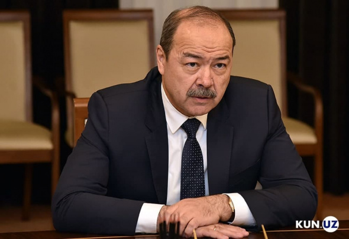
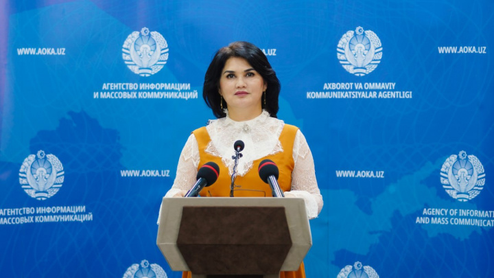
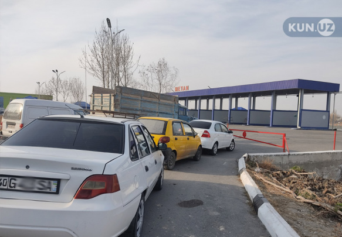
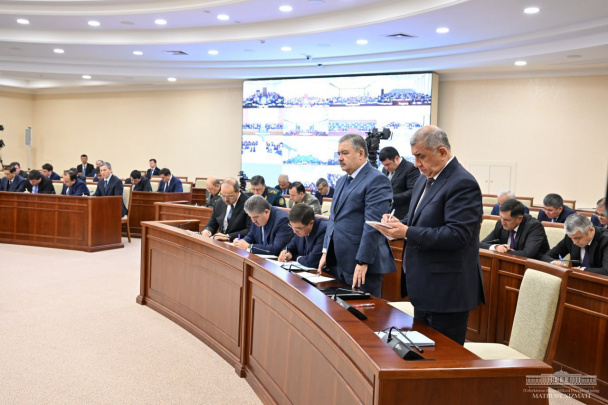
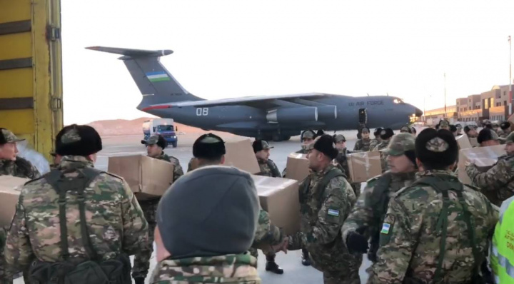
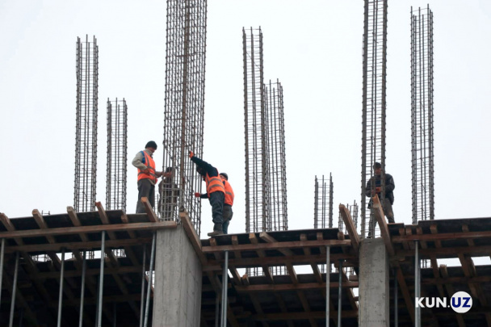
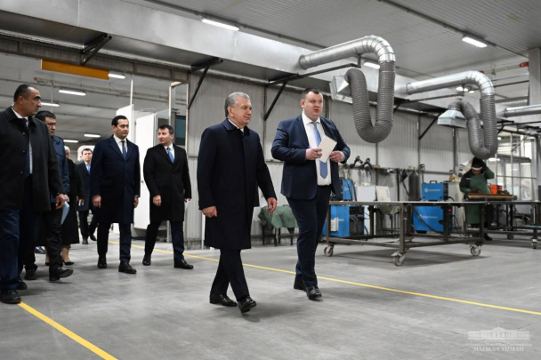
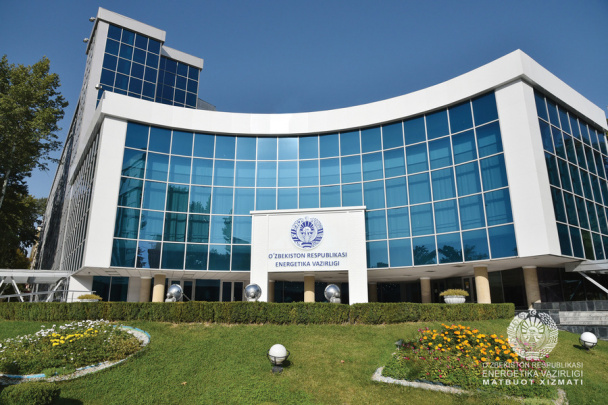
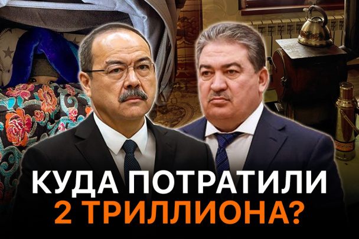
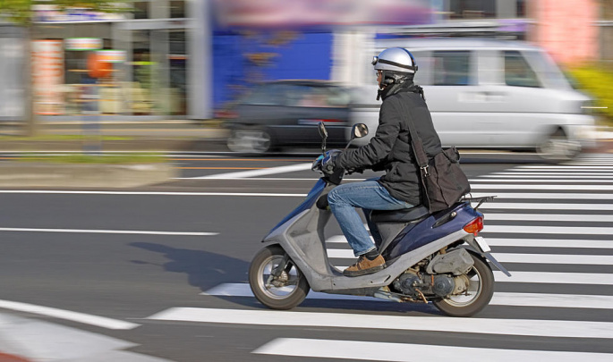

ЎЗБЕКИСТОН
ЖАҲОН
ИҚТИСОДИЁТ
ЖАМИЯТ
ФАН-ТЕХНИКА
СПОРТ
BUSINESS CLASS
АУДИО
ЎЗБЕКИСТОН
ЖАҲОН
ИҚТИСОДИЁТ
ЖАМИЯТ
ФАН-ТЕХНИКА
СПОРТ
BUSINESS CLASS
АУДИО
Обнародован проект указа президента о
реализации стратегии развития
нового Узбекистана на 2022-2026 годы в «Год внимания к человеку и качественного
образования».
|
Суд огласил приговор в отношении Даулетмурата Тажимуратова |

Абдулла Арипов провел совещание |
|---|---|
|

Источник: Мавжуда Мирзаева задержана по «делу Компромата» |

За последние дни на продажу выставлено несколько метановых заправочных станций |
|
«Хочу развивать астрономию в Узбекистане» — девушка, выигравшая гранты на $300 000 |
Кому принадлежат газ и нефть Узбекистана? |

Мирзиёев поручил СГБ и прокуратуре проверить деятельность уволенного хокима и других чиновников |
|---|

По указанию президента Шавката Мирзиёева, специальный борт прибыл в
Газиентеп в целях оказания неотложной помощи пострадавшим в результате
мощных землетрясений.

Правоохранители задержали
блогера Абдукодира Муминова. Его
подозревают в
вымогательстве $70
тысяч

В Ташкенте объявят временный
мораторий на новое строительство

Для модернизации электросетей
понадобится 3,2 тыс.
трансформаторов и 12 тыс.
километров кабелей

В Минэнерго прокомментировали
сообщения о том, что
власти
Узбекистана потребовали от
Туркменистана компенсацию
После гибели малолетних детей, употреблявших препа
«Док-1 Макс» индийского производства, вновь выявил
огромные проблемы
в фармацевтике в целом и в торг
лекарствами в частности. В нашей стране назрела
необходимость разорвать коррупционную связь между
врачами и фармацевтическими компаниями, создать
единую систему реализации лекарственных средств,
оцифровать процесс
обследования пациентов.
Узбекистан выразил стремление присоединиться к
«азиатским тиграм» еще в 90-х годах. Мы не скрывали
желания использовать
на этом пути опыт интенсивного
развития Южной Кореи. Однако обозреватель Kun.uz
Шахзод Юлдошбоев считает, что узбекское
правительство
до сих пор использовало не положительные, а
отрицательные стороны этого опыта.

7 декабря, задолго до аномальных холодов, президент
сообщил о создании правительственной рабочей группы
во главе с
премьер-министром Абдуллой Ариповым и
возложил на группу решение проблем с газом и
электроэнергией. Еще раньше была
создана комиссия под
руководством Ачилбая Раматова, на подготовку к зимнему
сезону были выделены 2 триллиона сумов.
Результаты их
работы ощутили на себе все.
Смерть 19-ти и госпитализация еще десятков детей по
приема сиропа «Док-1 Макс» стала самой печальной
трагедией 2022 года в Узбекистане. Детишки стали
жертвами системы, которая
давно вышла из-под контроля и
продолжает
набивать чьи-то карманы.
В Узбекистане, как и во всем мире, множество людей
мечтают о покупке жилья.
Говорят, что половина
населения планеты думает о покупке дома, а вторая
половина думает о
расширении имеющегося жилья. Но
мы знаем, что одного намерения в этом случае
недостаточно.
Помимо денег, покупка недвижимости
требует также определенной решимости.

Однако это противоречит международной конвенции,
ратифицированной Республикой Узбекистан.
Японские разведчики рассказали, сколько российских генералов погибли в Украине
В Турцию прибыл спецборт с дополнительной поисково-спасательной группой и медперсоналом из Узбекистана
Узбекистанцы составляют половину заключенных иностранцев в тюрьмах Казахстана
В связи с нукусскими событиями взяты под стражу 3 сотрудников правоохранительных органов
Глава МИД Узбекистана посетил посольство Турции в Ташкенте
В Узбекистане объявлен очередной призыв на срочную военную службу
В хокимияте Сурхандарьи разъяснили причину пожаров на нейтральных островах на границе с Афганистаном
Объем продукции сельского, лесного и рыбного хозяйства страны составил 364,5 трлн сумов
В Узбекистане объявлен очередной призыв на срочную военную службу
Сайт ҳақида
RSS
Алоқа
Реклама
Кун мавзулари
Kun.uz жамоаси